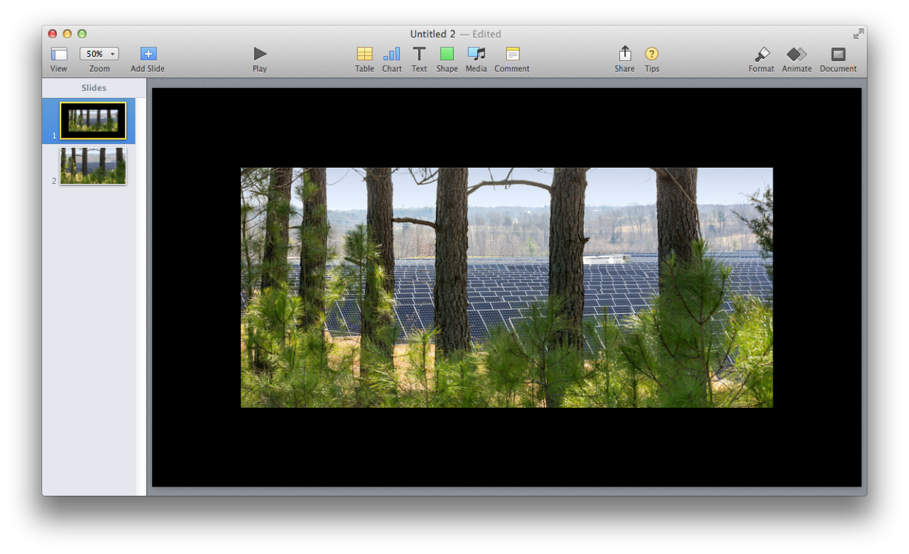
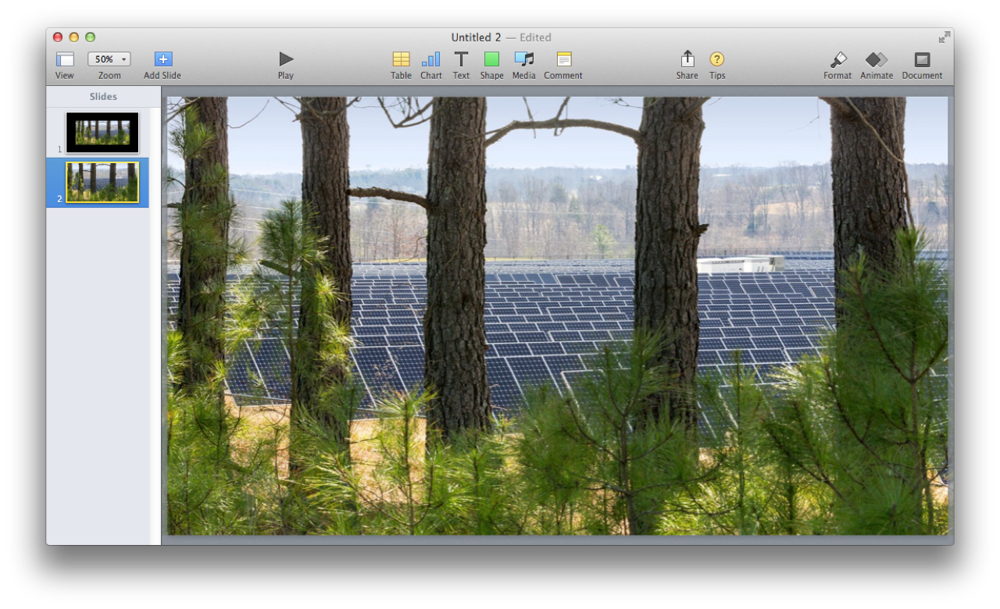

Here is a script that demonstrates the technique for creating new image slides from selected image files. You have the option to use the standard image import scaling or sizing the image to fill the slide.

(⬆ see above ) Image added to slide using the Keynote application’s default import methodology: if an image dimension is smaller than a corresponding slide dimension, then it is added at normal size; if an image dimension is greater than a corresponding slide dimension, then it is scaled to the corresponding slide dimension. The added image is centered in the window. In the example above, both dimensions of the image are smaller than their corresponding slide dimensions.
(⬇ see below ) Image added to slide using Scale to Fill method: adjust the image as needed (scale up or down) so that all the slide area is covered.

Image Slides from Files
01
tellapplication "Keynote"
02
activate
03
ifplayingistruethen tell the frontdocumenttostop
04
05
settheseImageFilesto ¬
06
(choose fileof type "public.image" with prompt ¬
07
"Select the image file(s) to import:" default location ¬
Mention of third-party websites and products is for informational purposes only and constitutes neither an endorsement nor a recommendation. MACOSXAUTOMATION.COM assumes no responsibility with regard to the selection, performance or use of information or products found at third-party websites. MACOSXAUTOMATION.COM provides this only as a convenience to our users. MACOSXAUTOMATION.COM has not tested the information found on these sites and makes no representations regarding its accuracy or reliability. There are risks inherent in the use of any information or products found on the Internet, and MACOSXAUTOMATION.COM assumes no responsibility in this regard. Please understand that a third-party site is independent from MACOSXAUTOMATION.COM and that MACOSXAUTOMATION.COM has no control over the content on that website. Please contact the vendor for additional information.